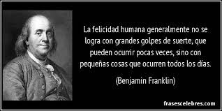

¿LA FELICIDAD ES UNA PERSONA?
En la actualidad se escuchan de aquí para allá conceptos como el amor propio, el autoestima e incluso la responsabilidad afectiva, todos acompañados de movimientos como el muy conocido “body posivite” que plantea una sociedad que acepte todo tipo de cuerpos sin juzgarlos, bajo argumentos como “cada quien tiene espejo en su casa”, pero, lo que une todos estos conceptos es su fin, es decir, todos están orientados a que seamos más felices y podamos vivir en paz, pero entonces ¿la felicidad esta orientada hacia una sola persona o a una sociedad entera que se adapte a ciertos parámetros para que sea “aceptable”?
Empecemos por ver la felicidad desde dos puntos de vista, el hedonismo, nos presenta la felicidad como la eterna búsqueda de placer, cosa que hoy en día ha sido malinterpretada por una sociedad que ve en el tener su felicidad, en placeres tan corrientes y pasajeros como el dinero y los lujos, caso muy contrario a la esencia de la corriente hedonista que nos habla de un placer espiritual, que nos represente un estado entero y estable de paz y una total ausencia de dolor. Aristóteles en cambio nos plantea la felicidad como el bien común, pues cada individuo nace con un rol dentro de la sociedad y a este le es imposible realizarse como persona sin la sociedad.
El amor propio o la autoestima es un autoconcepto que construimos sobre nosotros mismos a lo largo de nuestra vida, como me veo a mi mismo y que tanto me aprecio;puede verse afectada por diversos factores externos como la discriminación, el bullying e incluso los estilos de crianza de los padres, quienes han sufrido de esto son mucho más propensos a desarrollar baja autoestima.
Y es que en el papel todo es bonito, pero si miramos la realidad, nos vamos a dar cuenta de que no es así, amarse y aceptarse uno mismo cuesta muchísimas lágrimas, noches en vela sintiéndose insuficiente, reclamos y palabras de odio hacia uno mismo, cuesta aceptar que uno no podrá verse como lo desea, cuesta desaprender tantos comportamientos limitantes, cuesta aceptar defectos y las cosas que uno no puede cambiar, cuesta aprender a poner límites, entender que estar en lugares equivocados nos hace sentir menos y cuesta mucho más dejar de lado las inseguridades y los traumas de cada uno.
La felicidad entonces no es más que un largo proceso que se desarrolla a lo largo de nuestra vida y es que para ser felices necesitamos no de una sociedad que nos acepte sino de que nosotros mismos lo hagamos y seamos el cambio que queremos ver, por eso mismo, la felicidad es una persona, por eso mismo, la felicidad soy yo, somos nosotros.